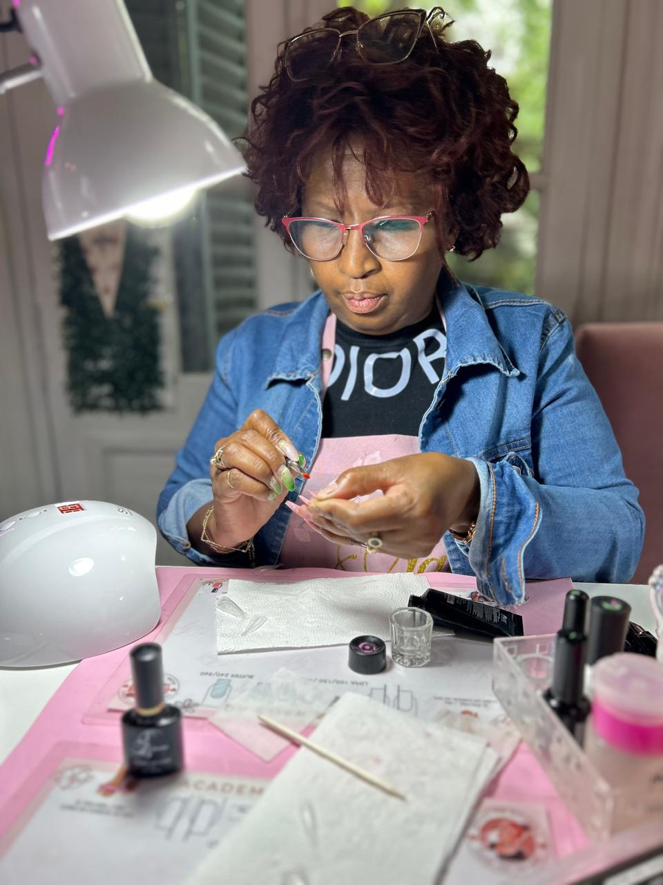
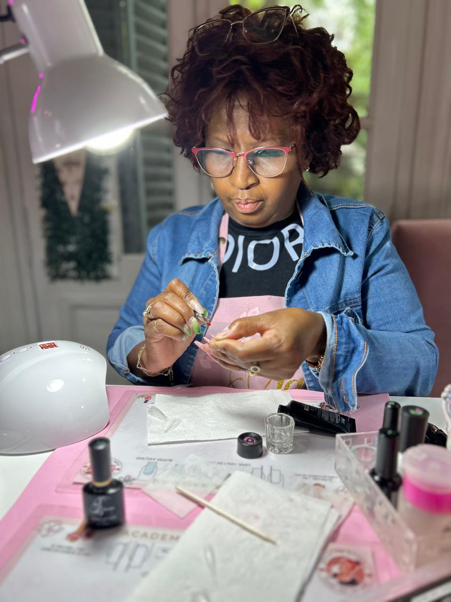

Quienes Somos
Caribeam Nails Studio es un centro de belleza creado por Azucena y Juliet, Madre e Hija dos cubanas que vinimos a Buenos Aires con una mezcla de emocion y nerviosismo, dejando atras nuestro hogar en la Habana en busca de nuevas oportunidades y un futuro brillante en el mundo de la belleza, nuestro salón es un punto de encuentro para nuestras clientas donde la belleza no solo se transforma a traves de manos expertas, sino tambien en un ambiente donde las historias, las risas y la amistad florece, comenzamos este empredimiento con el fin de brindar excelentes servicios, especialmente poniéndonos al día con las nuevas tendencias en servicios de cuidado de uñas y belleza. Garantizando que tengas un servicio de calidad y donde puedas encontrar todo lo necesario para tu comodidad y satisfaccion asi en cada trabajo realizado y en cada estilo, una parte de la Habana viva en Buenos Aires uniendo culturas y corazones.
Nosotras
 
